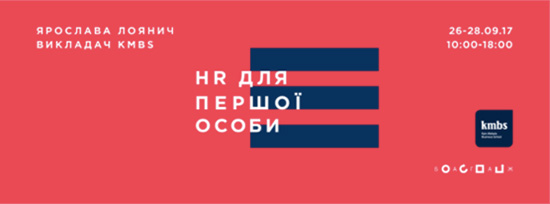

|
|
|
Привет!
Через три недели начинаем образовательный сезон для топ-менеджеров. С 26 сентября по 1 октября
в «Багаже» пройдет неделя Киево-Могилянской бизнес-школы. В рамках недели планируется две
основные образовательные программы: «HR для первых лиц» и «Школа сервиса».
|
- ЧТО.
Мастер-класс, который научит работать со шрифтами и создавать логотипы на их основе.
- ДЛЯ КОГО.
Для тех, кто хочет прокачать и систематизировать свои типографические знания и умения.
Для тех, кто хочет уметь анализировать шрифты: разбираться в их структуре, достоинствах
и недостатках. Для тех, кто хочет владеть приёмам разработки шрифтовых логотипов.
- Стоимость: 1600 грн.*;
- Длительность: 10 часов;
- Вопросы задавать Даше: +38 050 353 67 46.
|
Кирилл Ткачев
facebook.com/kiril.sun
Дизайнер-график, шрифтовик и каллиграф. Преподаватель School of visual communication,
сооснователь Innerspace, основатель Луцкой школы каллиграфии.
|
|
ПОДРОБНОСТИ И РЕГИСТРАЦИЯ

|
|
Что на самом деле должен делать HR-директор, а где начинается ответственность ТОП-менеджеров?
Какая роль в достижении стратегии отводится HR-службе и какие показатели позволяют оценить ее
эффективность? Чем HR может помочь бизнесу и как эта роль может усилить позиции компании на рынке?
Основные тезисы:
-
целостная картина ключевых процессов и показателей HR-системы;
-
понимание настройки HR-системы для долгосрочных результатов для бизнеса;
-
системные инструменты для отбора, оценки, управление производительностью и развитие персонала;
-
формирование целостного подхода к управлению людьми в компании.
- Стоимость:
12 000 грн.;
- Вопросы задавать Даше: +38 050 353 67 46.
|
Ярослава Лоянич
Более шести лет опыта в интернет рекламе и Digital-маркетинге. Работала над
ключевыми проектами для Samsung, Unilever, Philip Morris International, Lactalis,
МТС, Nemiroff, Reima, Danone, Acer, Microsoft, Tuborg.
|
|
ПОДРОБНОСТИ И РЕГИСТРАЦИЯ
|
- Что.
Курс о стратегическом подходе к ведению социальных сетей. Слушатели учатся всему, что должен
знать, уметь и делать специалист в сфере smm: анализировать и находить свою аудиторию,
создавать уникальный и полезный контент, выстраивать коммуникацию с читателями.
- Для кого.
Для всех, кто использует социальные медиа для решения бизнес-задач. Для тех, кто хочет обладать
практическими навыками и инструментами для работы с брендами в социальных сетях. Для тех,
кому важна стратегия развития бренда в социальных сетях.
- Лекторы.
Пять практикующих специалистов, которые дадут только рабочие актуальные методики и инструменты.
- Стоимость:
6500 грн.*;
- Длительность: 57 часов.
- Вопросы задавать Оле: +38 095 016 50 45.
|
Лекторы
Макс Захожий
Саша Абраимова
Макс Бурцев
Стаська Падалка
Вика Прудник
|
|
ПОДРОБНОСТИ И РЕГИСТРАЦИЯ
|
|
|
А еще, хотим напомнить, что у нас есть скидки:
Студентам и выпускникам базовых курсов – 20%;
От трех человек – 10%;
HOTSPOT – 5%;
ТЕСТО – 5%;
Spalah IT-School – 5%;
Sochnik School – 5%;
(*стоимость указана без учета НДС).
До встречи в #ibaggage! Вы же помните,
что теперь наш адрес –
переулок Лопанский 2/2?

|
|
|
Если по какой-то причине вы не хотите получать самую прекрасную новостную рассылку
в мире,
у вас есть замечательная возможность
отписаться от неё.
|
|
|
|